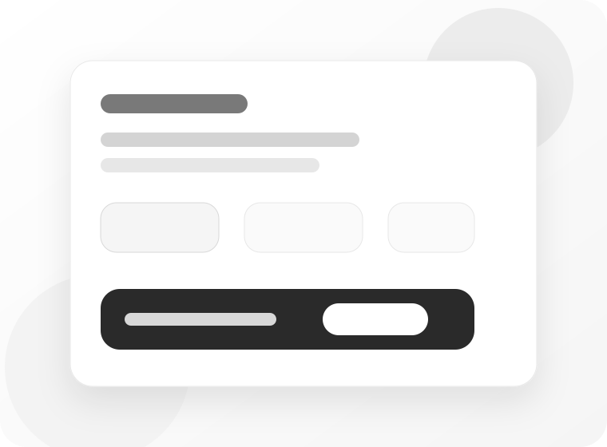
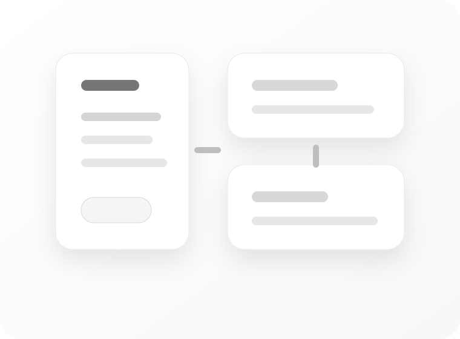

Homepage
기본 홈페이지 제작
사업 소개, 서비스 안내, 문의 접점을 갖춘 기본형 웹사이트를 제작합니다.
깔끔하게, 문의가 보이게
NOVAWORK는 복잡한 표현보다 고객이 이해하기 쉬운 흐름을 먼저 정리합니다. 첫 화면에서 핵심 서비스가 보이고, 필요한 순간에 바로 문의할 수 있는 웹사이트를 만듭니다.
신규 제작 · 리뉴얼 · 랜딩페이지 · 유지관리 상담 가능 · 24시간 내 1차 답변
WHY THIS WORKS
사이트가 예뻐도 핵심 메시지가 흐리면 문의로 이어지기 어렵습니다. NOVAWORK는 방문자가 처음 보는 정보, 신뢰를 만드는 정보, 문의를 결정하는 정보를 순서대로 배치합니다.

사업 소개, 서비스 안내, 문의 접점을 갖춘 기본형 웹사이트를 제작합니다.
하나의 상품이나 서비스에 집중해 상담 신청으로 이어지는 페이지를 구성합니다.
문구 수정, 이미지 교체, 섹션 보완처럼 운영 중 필요한 수정을 지원합니다.

SITE FLOW
홈페이지에 들어왔을 때는 복잡한 설명보다 “무엇을 하는 곳인지”가 먼저 보여야 합니다. 이후 섹션에서 서비스 범위, 작업 방식, 문의 기준을 순서대로 보여주면 읽는 흐름이 자연스러워집니다.
PROCESS
처음부터 많은 기능을 붙이기보다 지금 필요한 범위를 정리하고 우선순위대로 제작합니다.
현재 상황, 제작 목적, 필요한 페이지, 예상 일정과 예산 범위를 함께 정리합니다.
페이지 구조와 주요 섹션 흐름을 정리해 어떤 방향으로 제작할지 명확히 합니다.
모바일 화면, 문장 흐름, 버튼 위치, 문의 연결 상태를 확인하며 완성도를 높입니다.
필요 시 문구 수정, 이미지 교체, 페이지 보완까지 이어서 대응할 수 있게 준비합니다.
SCREEN EXAMPLES
사이트 전체가 글로만 보이면 답답해집니다. 설명이 필요한 부분은 짧게 나누고, 이미지나 예시 화면을 함께 배치해 한눈에 이해되도록 구성합니다.
회사 신뢰도, 서비스 범위, 문의 접점을 차분하게 보여주는 구성입니다.

광고나 캠페인 유입 후 하나의 행동으로 이어지게 짧게 설계합니다.

복잡한 문장과 오래된 화면을 정리해 읽기 쉬운 구조로 바꿉니다.

오픈 후 자주 바뀌는 문구와 이미지를 관리하기 쉽게 구성합니다.
SERVICES
사업 상황에 맞춰 필요한 범위만 선택하고, 이후 운영까지 이어질 수 있는 구조로 제작합니다.
기업 홈페이지, 서비스 소개 페이지, 브랜드 사이트 등 목적에 맞는 웹사이트를 제작합니다.
광고, 이벤트, 상담 신청처럼 하나의 목적에 집중하는 전환형 페이지를 제작합니다.
오픈 이후 수정, 업데이트, 배너 교체, 페이지 보완 등 운영 업무를 지원합니다.

SCOPE
처음부터 모든 기능을 넣을 필요는 없습니다. 지금 필요한 페이지와 문의 흐름을 먼저 만들고, 운영하면서 필요한 섹션을 추가하는 방식으로 부담을 줄입니다.
처음 홈페이지가 필요한 사업자에게 적합한 기본 구성입니다.
신뢰 요소와 안내 콘텐츠를 더해 사이트의 설득력을 높입니다.
PACKAGE
견적은 페이지 수, 기능, 콘텐츠 준비 상태에 따라 달라집니다. 상담 전에 대략적인 방향을 이해할 수 있도록 대표적인 제작 범위를 나눠두었습니다.
범위 기준 견적 · 1~3페이지
작게 시작하되 사업 소개와 문의 동선은 갖추고 싶은 경우에 적합합니다.
사업용 견적 · 5페이지 내외
회사소개, 서비스, 제작 예시, 문의까지 갖춘 기본 사업용 홈페이지 구성입니다.
월 단위 협의 · 수정 빈도 기준
오픈 이후에도 문구, 이미지, 배너, 섹션 수정이 자주 필요한 경우에 적합합니다.
MOBILE CHECK
실제 방문자는 모바일로 먼저 들어오는 경우가 많습니다. 그래서 PC 화면만 예쁘게 맞추는 것이 아니라 작은 화면에서 문장 길이, 버튼 위치, 이미지 비율이 자연스러운지 함께 확인합니다.
CONTACT
제작 목적, 필요한 페이지, 현재 상황을 남겨주시면 24시간 내 1차 답변으로 방향을 정리해 안내드립니다.